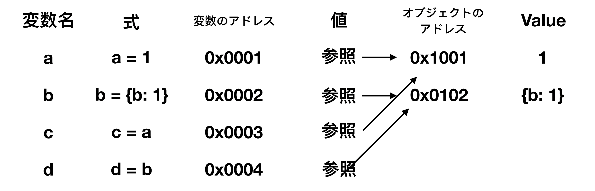

まず理解する必要があるのが、変数を宣言すると変数が生成され、リテラルで値を記述すると値が生成されることです。
変数には変数のデータを保持するアドレスがあり、リテラルで生成された値にはリテラルで生成された値を保持するアドレスが存在します。
そして、変数に代入するということは、変数にリテラルで生成された実態への参照を代入する事になります。
参考 リテラルで生成される値にはプリミティブ型とObject型があり、Object型は生成のたびに新しいObjectを作成します。
プリミティヴ型は、同じ値であれば同じメモリ領域を参照します。
以下のタイプがPrimitiveです。
Primitive型以外はObject型です。
Array, Function なども全てObject型です